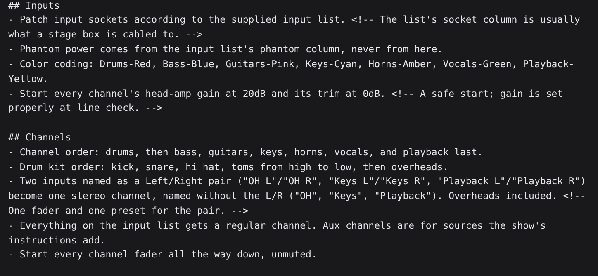
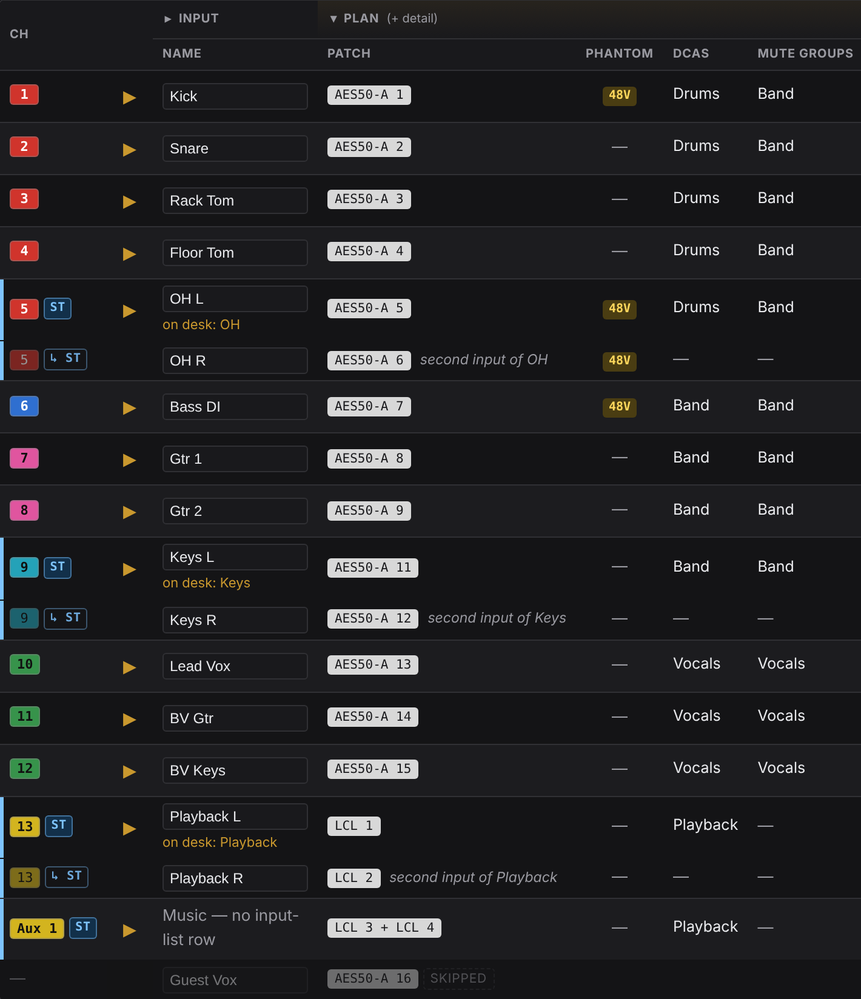
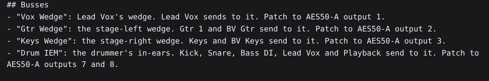
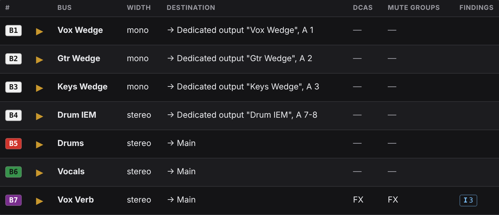
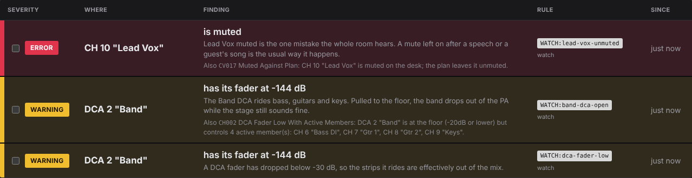

Atoo
Patches a complete show on a Behringer WING from your input list and conventions, audits it for correctness, and watches pre-show for routing errors.
Atoo is said "A-two": your A2, the second engineer at the desk.
From two text files to a whole desk
You write, once: your house conventions (excerpt)

↓ Atoo builds
16 input rows became 13 channels plus the walk-in music on Aux 1, 7 busses, 5 DCAs, and mains. OH, Keys and Playback joined into stereo pairs, every channel colored by category, and every instrument and vocal set up with its preset. The walk-in music comes from tonight’s instructions; the guest vocal who isn’t singing tonight is skipped.

You write, for tonight: the show’s instructions (excerpt)

↓ Atoo builds

Four monitor mixes patched to their outputs, mono wedges and a stereo in-ear as the conventions say, plus the mix and FX busses the conventions always build. The Demo show, as shipped.
The problem
Setting up a WING for a show is an afternoon of menu work: patching, naming, colouring, gain, high-pass, monitor sends, DCAs. You do it the same way every show, from memory, usually alone. When something is wrong, the desk won't tell you: every screen looks fine, and the vocal still isn't in the PA. And when the surprise horn section shows up 30 minutes before doors, you're praying that you're patched right while running cable on a packed stage.
Atoo is a second pair of hands and eyes. It sets the desk up the way you always do, from your own conventions, confirms every setting landed, verifies the signal path for every channel, makes complex last minute patches without disturbing what's already there, and keeps watch until doors.
What it does
01 Patches
Builds the whole show from your input list and your own house conventions: every channel, patch, colour, bus, send and DCA. A late change is one line.
02 Audits
Checks the plan against the desk's real limits before anything is written, then reads every value back. What didn't land is named, not found at soundcheck.
03 Watches
Watches the desk before doors for routing errors: the double-routed host mic, the muted mix bus, the DCA pulled to the floor.

Watch, before doors: what is wrong, where, and why it matters.
Where the AI is, and where it isn't
A build needs your own AI API key. Atoo is built and tested on Claude; you can try a local model, but none has done the job well so far.
- The model builds the show plan, a file you can read, before the show.
- The local Python code applies it to the console, with full logging and undo.
- Anything the model chose that you didn't state is announced.
- Verify, apply, undo, audit, watch and the Demo use no model at all.
Try it in two minutes, with no desk
pipx install "atoo[ui] @ git+https://github.com/corourke/Atoo.git" atoo ui
Press Try the Demo show: a five-piece band opens on a simulated WING Compact. Look through Build, Apply and Watch. Nothing is written anywhere.
Python 3.11 or newer. Runs on your laptop, in the browser or from the command line. No server and no account with us.
Consoles
The Behringer WING Compact, the full-size WING and the WING Rack. No other console is supported. Atoo never mixes.
Full applies are proven on a WING Compact. See what Atoo can’t do yet.